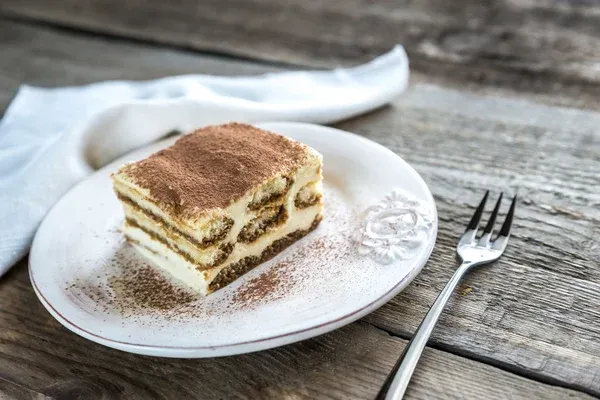

Vrni se
Recept za tiramisu

Sestavine:
- 500g mascarpone sira
- 3 jajca
- 100g sladkorja
- 1 vanilijin sladkor
- 200g baby piškotov
- 2 dl kave
- kakav za posip
Postopek:
- Ločimo beljake in rumenjake. Rumenjake stepemo s sladkorjem in vanilijevim sladkorjem.
- Dodamo mascarpone in dobro premešamo.
- Beljake stepemo v trd sneg in jih nežno vmešamo v maso.
- Piškote na hitro pomočimo v ohlajeno kavo in jih zložimo v pekač.
- Premažemo s polovico kreme, nato ponovimo plast piškotov in kreme.
- Posujemo s kakavom in postavimo v hladilnik za vsaj 3 ure.